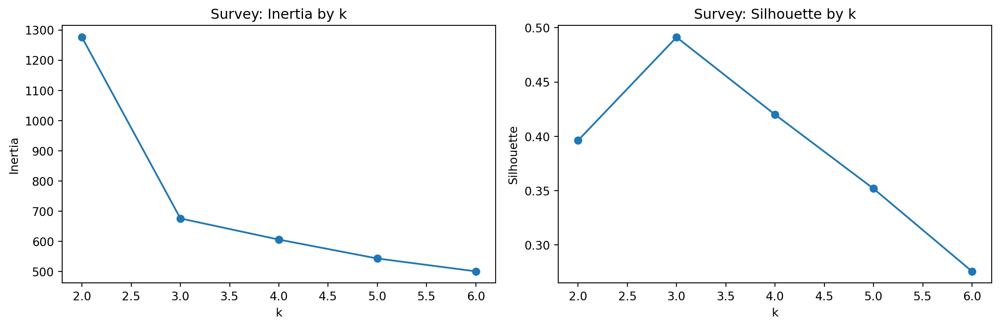
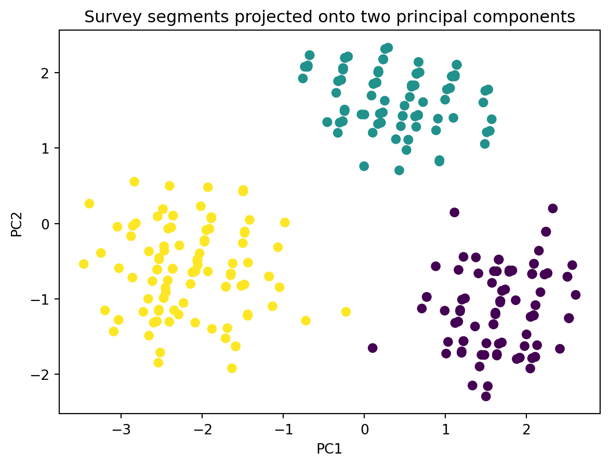

| true_segment | price_importance | quality_importance | innovation_interest | eco_concern | brand_loyalty | social_media_engagement | |
|---|---|---|---|---|---|---|---|
| 0 | Value Seekers | 5.0 | 2.0 | 2.0 | 3.0 | 2.0 | 3.0 |
| 1 | Value Seekers | 4.0 | 2.0 | 3.0 | 3.0 | 2.0 | 3.0 |
| 2 | Value Seekers | 5.0 | 3.0 | 1.0 | 3.0 | 1.0 | 3.0 |
| 3 | Value Seekers | 5.0 | 2.0 | 2.0 | 3.0 | 3.0 | 3.0 |
| 4 | Value Seekers | 4.0 | 2.0 | 2.0 | 3.0 | 2.0 | 3.0 |
1. Survey Segmentation
K-means on Attitudinal Likert-Scale Data
Framing
Survey segmentation is common when you have attitudinal or preference variables such as:
- price sensitivity,
- quality emphasis,
- environmental concern,
- novelty seeking,
- channel preference.
In practice, survey segmentation often uses ordinal scales or one-hot encoded categories. To keep this tutorial Pyodide-friendly, we will build a synthetic survey with Likert-like numeric items and use K-means after standardization.
Generate synthetic survey data
Inspect the synthetic survey
| price_importance | quality_importance | innovation_interest | eco_concern | brand_loyalty | social_media_engagement | |
|---|---|---|---|---|---|---|
| true_segment | ||||||
| Quality Loyalists | 1.99 | 4.66 | 2.97 | 3.96 | 4.62 | 2.08 |
| Trend Explorers | 3.01 | 3.76 | 4.86 | 3.74 | 3.00 | 4.72 |
| Value Seekers | 4.58 | 2.27 | 2.41 | 2.98 | 2.13 | 2.68 |
Standardize and choose the number of clusters
| k | inertia | silhouette | |
|---|---|---|---|
| 0 | 2 | 1275.993415 | 0.396234 |
| 1 | 3 | 676.144353 | 0.491191 |
| 2 | 4 | 606.215749 | 0.419992 |
| 3 | 5 | 543.666777 | 0.351835 |
| 4 | 6 | 501.085845 | 0.275706 |

Fit the survey segmentation model
| true_segment | segment | price_importance | quality_importance | innovation_interest | eco_concern | brand_loyalty | social_media_engagement | |
|---|---|---|---|---|---|---|---|---|
| 0 | Value Seekers | 2 | 5.0 | 2.0 | 2.0 | 3.0 | 2.0 | 3.0 |
| 1 | Value Seekers | 2 | 4.0 | 2.0 | 3.0 | 3.0 | 2.0 | 3.0 |
| 2 | Value Seekers | 2 | 5.0 | 3.0 | 1.0 | 3.0 | 1.0 | 3.0 |
| 3 | Value Seekers | 2 | 5.0 | 2.0 | 2.0 | 3.0 | 3.0 | 3.0 |
| 4 | Value Seekers | 2 | 4.0 | 2.0 | 2.0 | 3.0 | 2.0 | 3.0 |
Visualize the survey segments

Segment profiles for the survey
| segment_rank | price_importance | quality_importance | innovation_interest | eco_concern | brand_loyalty | social_media_engagement | |
|---|---|---|---|---|---|---|---|
| segment | |||||||
| 2 | 1 | 4.58 | 2.27 | 2.41 | 2.98 | 2.13 | 2.68 |
| 1 | 2 | 3.01 | 3.76 | 4.86 | 3.74 | 3.00 | 4.72 |
| 0 | 3 | 1.99 | 4.66 | 2.97 | 3.96 | 4.62 | 2.08 |
Cross-tab against the known latent segments
| true_segment | Quality Loyalists | Trend Explorers | Value Seekers |
|---|---|---|---|
| segment | |||
| 0 | 120 | 0 | 0 |
| 1 | 0 | 120 | 0 |
| 2 | 0 | 0 | 120 |
Interpretation
A typical interpretation here would be:
- the segment with high
price_importanceand lowerbrand_loyaltyis a value-oriented segment, - the segment with high
quality_importanceandbrand_loyaltyis a premium/loyal segment, - the segment with high
innovation_interestandsocial_media_engagementis a trend-seeking segment.